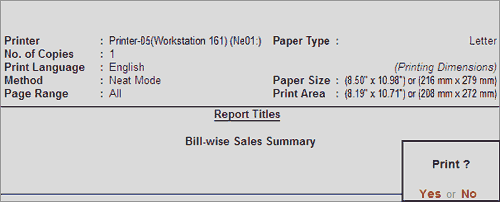
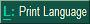
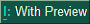
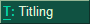
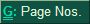
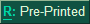
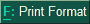
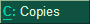
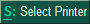

The print configurations sub-screen is as shown.

You may change the print configurations using the buttons on the Right Button Bar. The following table explains the functionality of these buttons.
|
Button |
Short-cut |
Functionality |
|
 |
Alt+L |
To change language. On selecting this option, the Language Configuration sub-screen appears. Print Language: Select the required language from the List of Languages. |
|
 |
Alt+I |
To enable preview of report. On selecting this option, on the print configurations sub-screen, (with Print Preview) appears at the bottom. The button label changes to No Preview.This is a toggle button. |
|
 |
Alt+T |
To set report titles. On selecting this option, the Report Title sub-screen appears. Click here to learn more. |
|
 |
Ctrl+G |
To set pages to print. On selecting this option, the Page Range to Print sub-screen appears. Click here to learn more. |
|
 |
Alt+R |
To select stationery. On selecting this option, on the print configurations sub-screen, against Method, to the right of the print format name, on Pre-printed Paper appears. The button label changes to Plain Paper. This is a toggle button. |
|
 |
Alt+F |
To select print format. On selecting this option, the Print Mode sub-screen appears. Click here to learn more. |
|
 |
Alt+C |
To set number of copies. On selecting this option, the Number of Copies sub-screen appears. Enter the number of copies to be printed. |
|
 |
Alt+S |
To select printer. Click here to learn more. |